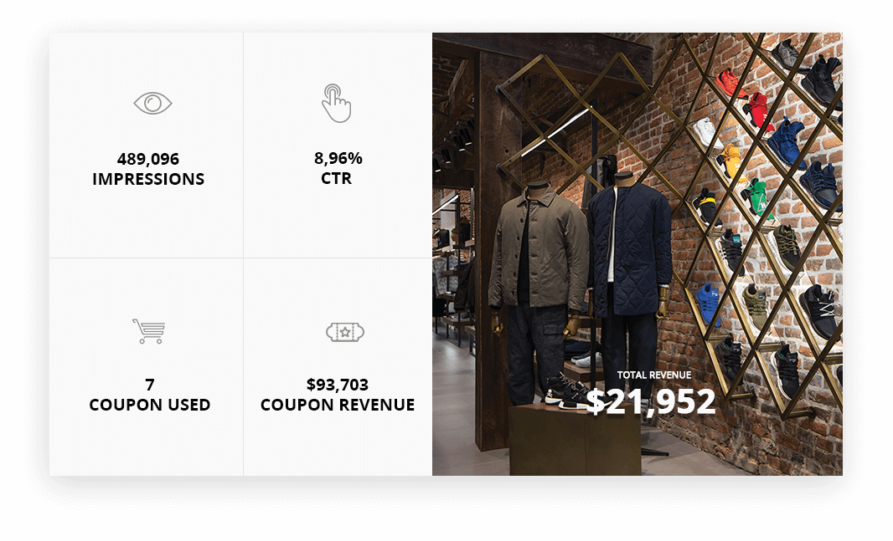

GOOGLE ANALYTICS ENHANCED ECOMMERCE TAG MANAGER FOR MAGENTO2.
About Google Analytics For Magento 2.
Google Analytics Enhanced Ecommerce for Magento 2 allows you to get full Enhanced Ecommerce tracking implemented within minutes so you can start gathering valuable data and take data driven decisions.
Easy Installation and Configuration: predefined Variables, Triggers and Tags can be automatically created in your Google Anaytics and Google Tag Manager accounts with one click API sync between your Magento 2 store and your GA and GTM accounts.
Google Analytics Enhanced Ecommerce is implemented using Google Tag Manager and allows you to track Product Impressions, Product Clicks, Product Detail Impressions, Add/Remove product to cart, Promotion Impressions, Promotion Clicks, Measure each step in checkout process, Purchases and Full and Partial Refunds.
With Google Analytics Enhanced Ecommerce, marketers will be able to add, edit or remove marketing and measurement tags without the intervention of webmasters. Google Analytics Enhanced Ecommerce is a free tag management tool where you can deploy and manage various tags and code snippets on a Magento 2 store, such as those intended for traffic analysis and marketing optimization.
At a high level, Google Analytics Enhanced Ecommerce works like this: A small snippet of code is placed on your Magento 2 store, that is connected to the Tag Manager servers. A web based interface is used to install tracking codes on your store automatically. The benefits of this extension is that you usually will have to write no additional code to deploy or modify tracking codes for your marketing or analytics campaigns.
Features of the Extension.
- Track product impressions by position in the Category Page
- Track product clicks by position in the Category Page
- Track product impressions by position in the Search Result Page
- Track product clicks by position in the Search Result Page
- Track product impressions by position in the Related, Up-sell and Cross-sell section
- Track product clicks by position in the Related, Up-sell and Cross-sell section
- Track the number of times a product was added to the shopping cart
- Track the number of times a product was removed from the shopping cart
- Track the number of times a product was included into the checkout process
- Track each Checkout Step (billing address, shipping address, shipping options, payment options)
- Track purchases with or without shipping and tax fees
- Track coupon usage
- Track product Brand
- Track internal Promotion Impressions
- Track internal Promotion Clicks
- Internal Promotion Widget
- Support for IP anonymization to be in compliance with EU countries
- Support for Display Advertising Features
- Child Vs Parent (Send Parent Id or Child id cart, checkout and thank you page)
- Multi Currency Ready
- GDPR compliant with native magento accept cookie functionality
- Multi Store Ready
- Varnish Cache Ready
- Full Page Cache Ready
- 8KB payload support
- Order Success Page Total Calculation (subtotal / grandtotal)
- Track Magento User ID
- Track user type (customer group)
- Google AdWords Remarketing Tracking
- Google AdWords Conversion Tracking
- Persistent Data Management
- GTM API - Create tag, trigger, variables
- GTM API - Update tag, trigger, variables (PRO)
- Track product review count (PRO)
- Track product review score (PRO)
- Track stock status (PRO)
- Track Sale products (PRO)
- Track transactions by product variants (configurable product) (PRO)
- Track transactions by product custom options (PRO)
- Track custom dimension Page Type (PRO)
- Track custom dimension Page Name (PRO)
- Product level Custom Dimension / Metric sending (Send up to 5 product attributes to GTM) (PRO)
Made for Web Merchandisers.
"Enhanced Ecommerce gives me information beyond shopper behavior, I actually know what products my customers need!"Web Merchandisers question:
"How visitors are navigating through my web store, which categories are the most visited, which products are the most often clicked through from a certain category based on their position?"The Solution:
Our extension allows you to have visibility over merchandise by category, position, products and SKU. You can also extend each report to understand which products from a certain category gets the most views and has the best click through rate based on position in the listings.
Enhanced Ecommerce will also track how many times a product was added to the cart, removed from it or was succesfully purchased. Have full visibility of your customers interaction with your website.
Web Merchandisers question:
"I want to increase Average Order Value, what products are converting as Related, Upsell and Cross-sell? Am I recommending the right products?"The Solution:
Get a real understanding of how much revenue related, upsell and cross-sell products generated? You can now easily track the Impressions, Click Through Rate, how many times an item was added to the cart and Sales generate. Understand what is working and what doesn’t so you can take quick actions to improve your average order value!
Web Merchandisers question:
"How visitors are navigating through my web store, which categories are the most visited, which products are the most often clicked through from a certain category based on their position?"The Solution:
Our extension allows you to have visibility over merchandise by category, position, products and SKU. You can also extend each report to understand which products from a certain category gets the most views and has the best click through rate based on position in the listings.
Made for Ecommerce Manager.
"All of my data is in one place, and I can see the details behind the big picture so I can optimize marketing programs, and increase sales."" Ecommerce Manager question:
"I don’t have many reviews on my website, should I focus on getting more reviews or really good reviews? How many reviews/product and what review score starts improving conversion rate? "The Solution:
Custom Dimensions for Product Reviews will allow you to track and understand how product reviews are influencing conversion rate. You will be able to attach a monetary value to every review that you get and be able to understand which review score is positively/negatively influences conversion rate.
Ecommerce Manager question:
"I have many coupon codes and they are posted all over the Internet! How can I understand which coupon from which marketing channel performed the best?"The Solution:
Enhanced Ecommerce can track coupon code performance by traffic source and medium. This will allow you to quickly understand how much revenue each coupon code generated, what coupons are working on some marketing channels what doesn’t. This way you can optimize your marketing efforts and really understand what kind of promotions are working and where.
Ecommerce Manager question:
"I am wondering if my website is intuitive enough, is my checkout process easy to follow? Are my customers getting stuck in the purchase funnel?"The Solution:
The Shopping behavior report will let you analyze your users shopping experience form product impressions to transactions. You will better understand which part of your website is not optimized enough and results in abandonment.
The Checkout Behavior Analysis report lets you see how successfully your users moved through your checkout process. The checkout-funnel visualization illustrates how many users moved on from one step to the next, how many abandoned the process at each step, and how many entered the process at each step.
Ecommerce Manager question:
"All the sudden I started selling a product that never got sold before! How can I find out which marketing channel helped me sell this product?"The Solution:
With Enhanced Ecommerce you can now track which traffic source and marketing initiative generated the sale of an exact product! Stop wondering and start optimizing your marketing efforts to start selling products that you had a hard time to sell before!
Ecommerce Manager question:
"My homepage has multiple banners in the slider, are people actually seeing my 4th slide? Are they clicking through?"The Solution:
Enhanced Ecommerce has the ability of tracking both impressions as well as click of a specific promotional banner on your website. More then that, it can exactly track how many transactions it generated and what was the total revenue generated by a banner by position. This report will allow you to better optimize the position and the messaging of each of your banners.
Ecommerce Manager question:
"How can spending on traditional marketing channels, such as search engines, comparison engines, emails and affiliates be tied to ROI or optimize?"The Solution:
See all of your marketing data in one place, with attribution by source so you manage marketing ROI.
1 MINUTE INSTALLATION GUI.
-
Step 1:
Before installing please check the extension compatibility. This extension is currently compatible with the following Magento versions 2.0.X. - 2.3.3. It is recommended to install the extension first on a testing server before you install it on a live (production) server. -
Step 2:
Copy the extension files to below paths of your magento 2 instance. If ‘app/code/WeltPixel’ folder is missing, please create it manually:
app/code/WeltPixel/Backend
app/code/WeltPixel/GoogleTagManager -
Step 3:
Copy the installation GUI folder 'weltpixel-extension-installation' in the root of your Magento installation. In some Magento configurations the public root folder may be under 'pub' directory.
www.yourmagentostore.com/weltpixel-extension-installation/
-
Step 4:
In your browser go to www.yourmagentostore.com/weltpixel-extension-installation/ and simply follow the installation steps from the graphical interface, presented in your browser. See the installation video: 1 Minute Module Installation via browser GUI. -
Step 5:
Wooohooo! The extension is now installed on your Magento store! Congrats!
Optional
Copy the extension files into the below path of your Magento 2 instance. If the ‘app/code/WeSupply’ folder
is missing, please create it manually:
app/code/WeSupply/Toolbox
If you experienced any issues or limitations with this quick GUI installation, see also SSH Installation below. SSH installation does the same thing but you are required to issue the commands step by step via CLI. Some servers may have high security configurations and may limit the functionality of this GUI Installer.
How to Install via SSH.
-
Step 1.
Before installing Google Analytics Enhanced Ecommerce Extension on a Magento 2 store please check the extension compatibility. This extension is currently compatible with the following Magento versions 2.0.X. - 2.3.3. It is recommended to install the extension first on a testing server before you install it on a live (production) server. -
Step 2.
Copy the extension files to below paths of your magento 2 instance. If ‘app/code/WeltPixel’ folder is missing, please create it manually:
app/code/WeltPixel/Backend
app/code/WeltPixel/GoogleTagManager -
Step 3.
Access the root of your magento 2 project from command line and run the following commands:
php bin/magento module:enable WeltPixel_Backend --clear-static-content
php bin/magento module:enable WeltPixel_GoogleTagManager --clear-static-content
php bin/magento setup:upgrade
-
Step 4.
Flush any cache that you might still have enabled on your server or in Magento. -
Step 5.
Woohoo, the extension is installed!
Optional
Copy the extension files into the below path of your Magento 2 instance. If the ‘app/code/WeSupply’ folder
is missing, please create it manually:
app/code/WeSupply/Toolbox
How to Upgrade the extension.
- Step 1. Go to your Google Tag Manager account and remove all tags associated with this extension as new release may contain new tags or adjustments to existing tags. If not removed, tags will not be updated.
- Step 2. Remove extension code under app/code/WeltPixel/GoogleTagManager before adding the new extension files. Extension may be refactored and old unused files may cause random issues so it's best to only keep the latest version of the files.
- Step 3. Follow normal installation instructions above.
Magento Marketplace Installation.
- If the extension was purchased from the Magento Marketplace, follow the instructions in this article: How to install extension if purchased from the Magento Marketplace
- If asked for a license, follow the steps presented in section 7 of this article: License key for local / staging / development environment. Multi-store licensing.
HOW TO CONGIFURE GOOGLE ANALYTICS IN MAGENTO 2.
Step 1.
- a. Go to Admin > Store > Configuration > Sales > Google API > Google Analytics > and set this option to [ No ].
- b. Go to Admin > Store > Configuration > Sales > Google API > Google Adwords > and set this option to [ No ].
- c. Go to WeltPixel > Google Analytics Enhanced Ecommerce > General Configuration > Enable Google Tag Manager and set this option to [ Yes ].
Step 2.
- You need to create a Google Tag Manager account if you don’t have one already at this link: https://www.google.com/analytics/tag-manager/
- Setup Account name, Setup Container from yout Google Tag Manager like in the image.
Step 3. HOW TO SETUP GOOGLE UNIVERSAL ANALYTICS IN MAGENTO 2.
-
Once the account is created get the Google Tag Manager (GTM) scripts in admin section of your Magento 2 store WeltPixel > Google Analytics Enhanced Ecommerce > General Configuration.
You need also to get the code for the "<body>" section.
- Go to WeltPixel > Google Analytics Enhanced Ecommerce > General Configuration > Google Tag Manager Javascript Code and paste the code for "<head>" section in your magento store.
- Then go to WeltPixel > Google Analytics Enhanced Ecommerce > General Configuration > Google Tag Manager Non-Js Code and paste the code for "<body>" section in your magento store.
Step 4. HOW TO ADD GOOGLE TAG MANAGER GTM TO MAGENTO 2.
- In Magento admin configure your Google Tag Manager (GTM) API Credentials in order to automatically link your store with your GTM account and create all default provided triggers automatically with one click.
-
For this you need to go to WeltPixel > Google Analytics Enhanced Ecommerce > GTM API Configuration and fill in Account ID, Container ID, Universal Analytics Tracking ID. All this information can be found in your
Get information from Google Tag Manager and Google Analytics accounts.
- a) Go to Google Tag Manager (GTM) Identify the IDs in your GTM account like in the picture.
-
b) Go to Google Analytics (GA) You can see how to get your Universal Analytics ID credentials from your Google Analytics account.
Tracking code is available under GA account > Admin > Property settings > Tracking ID as you can see in the picture.
After you click you will find the Tracking ID you need.
Note: Once you fill in the above ID’s save the GA settings in order not to lose the credentials on page refresh.
Step 5.
- After filling Accout ID, Container ID and Universal Analytics Tracking ID, hit Sign in to Google and allow to link your Google Tag Manager (GTM) account with your Magento Store
You will be notified to save your credentials in order not to lose them before continuing with the process.
Hit Save Config button.
Step 6.
-
Go to WeltPixel > Google Analytics Enhanced Ecommerce > GTM API Configuration and hit Create Variables, Triggers and Tags button.
You will be notified about the Variables, Triggers and Tags created.
Step 7.
- After all your tags have been created in Google Tag Manager (GTM), go to Google Tag Manager (GTM) account and PUBLISH / SUBMIT all your tags by following the steps from Google Tag Manager.
- ! NOTE: If the container is not published/submitted in your GTM account, no tracking will be available. Make sure to publish your container.
- !! NOTE 2: Displaying statistics in your Google Analytics account based on tracked data could take from 30 minutes from 48 hours according to GTM Documentation. However, real time data shoud be visible right away if your account is correctly setup.
Step 8.
-
In your Google Analytics account, go to Admin > Ecommerce Settings in order to define the labels for checkout-funnel steps.
Checkout Steps E-Commerce setup.
Step 9. HOW TO INTEGRATE GOOGLE ANALYTICS WITH MAGENTO 2.
In order to activate your conversion sections of your Google Analytics dashboard you have to:
-
a. Enable Ecommerce
-
b. Enable Enhanced Ecommerce Reporting
-
c. Add Checkout Labeling (Funnel Steps). Each store can have different checkout steps, so make sure to identify your checkout steps using GTM debugger (GTM container preview) before adding them here in order to avoid wrong tracking. Here is a common Magento checkout funnel example:
- Shipping
- Shipping Method
- Payment and Billing
-
d. Save Ecommerce set-up.
More details about Checkout funnels here: How to setup Enhanced Ecommerce reports (Google Documentation)
How can I identify how many steps my store has?
Step 10.
- Go to your GTM dashboard and enable preview mode
- Go to your store and with the preview mode enabled proceed to checkout. (Make sure you have at least one product in the shopping cart!)
- If the GTM container is in preview mode, you should already see the GTM tag debugger when loading your checkout page. (Make sure you are using the same browser for enabling preview mode and the debugging of your checkout steps.)
- You will find that under Checkout - Data layer, each step that has loaded can be seen as in our example.
- Step 1 (Shipping Address).
- Complete each required field with your customer information and proceed to the next step.
Great news! We've identified the first step (Shipping Address) of the checkout process presented in this example! We'll need to remember it, as in the sections below, we'll be shown how to add this step to the Google Analytics checkout funnel.
Note: Each checkout process is different, so for your store, you may have a different option here.
- Next, we'll need to head to the following step of the checkout process, which, in our case is the Shipping Methods section, make sure you select an option and click the Next button.
- In the preview window you will see two new events fired, a new checkout event for step 2 as well as the option associated with this step.
- As you can see in the photo on the left, we've identified -> Step 2 (Shipping Methods) of our example. Just make a note of it, as it will have to be added to the Google Analytics checkout funnel as well.
Note: Each checkout process is different, so for your store, you may have a different option here.
- Since Step 2 has multiple shipping methods, in our example, in the Checkout Option section of the GTM debugger, you can find out more specific details about the selected shipping option.
Note: This is informative, and you'd only need to access this if you wanted additional details about this checkout step.

- In our checkout funnel the next step is to select Payment Method. We select the payment method and click on the Place Order button.
- By pushing the Place Order button we are redirected to the checkout success page and we've successfully identified this step as well as being Step 3 (Payment Method) by following the same process explained in the sections above.
Configure Google Analytics checkout behavior.
Step 11.
- Go to Admin -> Ecommerce Settings, as shown in the photo on the right.
- Each checkout table has a number on the left hand side, that number needs to match with the checkout step identified above. Under Label Name, simply type in the name of each step of your own checkout process identified in the previous section. It's important that they match exactly, as otherwise, the checkout drop-off behavior that shows in the GA account would not be relevant to your store.
- After a few days of data collection you will be able to visualize the checkout funnel in your report under Conversions -> Ecommerce -> Checkout Behavior. According to Google, it may take up to 48 hours for data to start flowing in.
- Please note that reporting will be only available from the moment your setup the checkout behavior steps. It will not provide data for days prior to setup.
Step 12.
-
Woohoo, the extension is configured!
Note: Your GA and GTM account are now configured with our pre-generated settings and ready to receive valuable information from your Magento 2 store! You can now gather valuable data and take data driven decisions! Congrats!
Note 2: If you would like to receive even more personalized tracking data, you can always extend your GTM and GA default configurations from your account. If you would like our Google Certified Specialists to help you with that please contact our support for a quote.
General Configuration.
- Google Tag Manager Javascript Code Position [ In the head tag / Before body close tag ] - choose position where Javascript code to be inserted. Default: In the head tag.
- Impression Chunks Size - allows you to break up the payload into smaller chunks. We recommend limiting it to 15. The analytics.js library refuses to send a hit if the full payload size is larger than 8192 bytes. This does require quite a lot of data to be stuffed within, but it only takes some dozens of product impressions to clog up the channel
- Product identifier [ SKU / ID ] - you can identify products in GA and GTM either by SKU or by product ID from your Magento catalog
- Enable Brand - if you would like to have each product brand tracked in Google Analytics Ecommerce Reports - select yes and use appropriate brand attribute
- Order Success Page Total Calculation [ Subtotal / Grandtotal ] - Calculates total amount on success page based on Subtotal or Grandtotal
- Measure Product Clicks - This option allows ‘Product Click’ tracking on Category Page , Search results page and Related/Cross-sell/Up-sell product grids. If Product Click Tracking is enabled this option rewrites Magento_Catalog::product/list.phtml and Magento_Catalog::product/list/list.phtml. If you are using a custom theme/extension already re-writing this templates check here how you can make the necessary compatibility adjustments: How to solve GTM compatibility issues
-
Promotion Tracking [ Yes / No ] - Example of usage:
<a href="#" data-track-promo-id="PROMOID" data-track-promo-name="PROMONAME" data-track-promo-creative="PROMOCREATIVE" data-track-promo-position="PROMOPOSITION">Content </a> - Exclude Tax From Transaction [ Yes / No ] - Exclude taxes amount from transaction
- Exclude Shipping From Transaction [ Yes / No ] - Exclude shipping amount from transaction
- Custom Dimension - Customer ID [ Yes / No ] - Use customer ID as a custom dimension
- Custom Dimension - Customer Group [ Yes / No ] - Use customer group as a custom dimension
- Custom Dimension - Stock Status (insctock/out of stock) [ Yes / No ] - Use customer dimension as a custom dimension
GTM API Configuration.
- Account ID - Must be set as seen in Step 4 from Configure section
- Container ID - Must be set as seen in Step 4 from Configure section
- Universal Analytics Tracking ID - Must be set as seen in Step 4 from Configure section
- I.P Anonymization [ Yes / No ] - Allows website owners to request that all of their users' IP addresses are anonymized. It help website owners comply with their own privacy policies or, in some countries, recommendations from local data protection authorities, which may prevent the storage of full IP address information.
Google Adwords conversion tracking.
- Enable [ Yes / No ] - Enables Google AdWords conversion tracking
- Google Conversion ID - You need a Google AdWords account adwords.google.com. Follow Google documentation on how to find Google Conversion ID for AdWords.
- Google Conversion Label - Follow Google documentation on how to find Google Conversion Label for AdWords.
- Google Conversion Currency Code - Fill in currency used in AdWords account. e.g. usd
Google AdWords Remarketing.
- Enable [ Yes / No ] - Enables Google AdWords remarketing.
- Google Conversion Code - Follow Google documentation on how to find Google Conversion Code for Google AdWords Remarketing.
- Google Conversion Label - Follow Google documentation on how to find Google Conversion Label for Google AdWords Remarketing.
Linking your GA with AdWords Account.
- Linking your Google Ads account to your Analytics property lets you see the full customer cycle, from how they interact with your marketing (e.g., seeing ad impressions, clicking ads) to how they finally complete the goals you’ve set for them on your site (e.g., making purchases, consuming content).
- When you link Google Ads and Analytics, you can see ad and site performance data in the Google Ads reports in Analytics.
- When linking GA with AdWords you can select if you want Manual or automatic tagging.
- Please refer to this article for more information https://support.google.com/analytics/answer/1733663?hl=en&utm_id=ad
Step 1.
- Go to GA Admin
Step 2.
- Under the Product Linking column, click on Google Ads Linking.
Step 3.
- Once configured, click on Link accounts.
- Presto! Google Analytics is now linked to AdWords!
Setup Custom Dimensions & Metrics.
Step 1.
- Google Analytics allows for tracking custom Dimensions as well as custom Metrics.
- Our extension enables you to track multiple custom dimensions specific to each custom dimension scope.
- In GA you will need to setup custom dimensions to enable tracking.
- Go to: GA Admin

Step 2.
- Under the Property column, click on Custom Definitions and then Custom Dimensions
Step 3.
If you are just starting out we highly recommend creating everything as described. In Magento Admin Panel we are pre-populating each custom dimension with sample indexes for your help. Please make sure that the Custom Dimension scopes and Indexes in Magento match with the ones created in GA. In a fresh GA account, the index number will start from 1 and as you create them will increase sequentially. An example can be seen in the screenshot in Step 6.
- Click on the +New Custom Dimension button.
Step 4.
- Insert Custom Dimension Name.
- Select the Custom Dimension Scope.
- Make sure the Active box is checked.
- Click on the Create button.
Step 5.
- Click on the Done button to complete the creation of your Custom Dimension.
Step 6. Success!
- This is an example. If you are an advanced GA user, go ahead and set each dimension up as you wish. Just make sure they match with what you have in Magento.
- The index number can be found here (if created for the first time, this will be in a sequential order):
- As soon as the Custom Dimensions are setup in GA and they are verified to match with Magento, hit the Create tags button in your Magento Admin. This will automatically assign each custom dimension to the appropriate tag in GTM.
- If you've already created the tag, the GTM PRO version of our module will automatically update each tag as soon as you sync the Magento tags with GTM.
Troubleshooting.
Preview and debug GTM tags
-
Use GTM Preview functionality
There are many ways to troubleshoot your GTM setup. However we found that using the GTM preview mode you can quickly and easily troubleshoot your GTM setup regardless of your expertise level. Go to your GTM account and in the top right corner you will see the Preview Button
- As soon as you enable the Preview Mode go to your website and refresh the page. You will see all the Tags that got fired.

-
Deploy your change
After your setup all your tags make sure that you publish all your changes. Go to GTM account and in the Top Right corner your will find the Submit button. Make sure that those tags are fully published in order to be able to track everything.
Frequently Asked Questions.
The GTM module is not tracking properly, what can I do?
The first step would be to make sure you've followed all the configuration steps provided on the product page here: Google Analytics Enhanced Ecommerce Tag Manager for Magento 2. The second step is to make sure the extension is updated to the latest version, as each new release contains minor bug fixes and performance enhancements.
Where can I download the latest version of the GTM extension?
As for any purchased extension from weltpixel.com, you can find the latest version under your weltpixel.com account's "My Downloadable Products" section.
Does the module track returns and cancelled orders?
Our extension does not track returns or order cancellations.
Do I need to create a "purchase" tag to track transactions?
No purchase tag is needed. The automatically generated tags should be sufficient to track transactions. Just make sure you've followed the configurations steps on the product page: Google Analytics Enhanced Ecommerce Tag Manager for Magento 2.
Do I need a GTM and GA snippet on every page?
If you've installed the GTM tags via our automated process, the GA tag is already included in GTM, therefore, it is not needed to have an additional GA tag loaded separately.
I already have a GTM with my own tags. Can I keep it and use the new tags as well?
We suggest creating a separate GTM containter for the new/updated tags, which you can use for production, and copying over the old tags that you may need.
Does the extension handle the implementation of dataLayer?
Yes. The extension communicates Magento data to GA through data Layer, which is basically the foundation upon which the module is built.
The GTM extesion overrides my template design. What can I do?
We have a very handy article that goes over this specific issue. Take a look at it here: How to solve compatibility issues - Google Tag Manager Enhanced Ecommerce.
I've just installed the module, but I can't see any data in GA. Why?
It can take up to 48 hours for data to start flowing into Google Analytics. In the meantime, double check to make sure the configuration steps from the product page have been followed.
I have Cookie restriction issues with the GTM module on Magento 2.1.x. What can I do to fix this?
This is a bug specific to Magento 2.1.x. (Github issue#5596). We have an article written specifically to help overcome this. You can find it here: How to overcome Cookie restriction issues in Magento 2.1.x. (Google Tag Manager and Google Analytics cookie fix).
Does the extension show any data directly in my Magento Admin?
All reports can be seen and analyzed in the Google Analytics account. There's no section in the Magento Dashboard which allows for tracking.
I have an error generating GTM Tags and Variables. What can I do to solve it?
The domains where the GTM extension connects to create the tags for you automatically are listed below, make sure to allow outgoing connections to this domains or else the tags cannot be created.
- http://www.oauth.weltpixel.com
- https://www.googleapis.com
I am using the extension on a Magento 2 instance where products can be included in multiple categories (e.g one SKU could be listed under Sale, Trending and Jackets). How does the module decide which of those 3 categories to assign the product to in the Enhanced Ecommerce Categories tab of the Product Performance report in GA?
The product will be assigned to the first Category, based on how Magento saves this data internally - when a product is assigned to multiple categories, Magento will save the path of this product based on the first assignment. So, if you assign the product first to Jackets, and then Sale and Trending, it will show up under Jacketst in the GA report.
How do subcategories work with the module? E.g. If an SKU is in the Sale subcategory under Jackets, does Sale or Jackets feed through to the GA report? Are subcategories and categories reported at at the same level or are subcategories ignored?
If the product is assigned under Sale from 'Women/Jackets/Sale', the whole category path is sent to GTM until the root path is reached. In this example the category(s) path sent to GTM is 'Women/Jackets/Sale'
Change Log.
What’s new in v.1.9.1 - October 16, 2019
- Fixed an issue which caused Category Names to appear as "unset" in Google Analytics.
- Added a Secure Cookies option in the Magento Admin section.
- Added new translations.
- Added an Admin Option which allows for setting a custom checkout Success Page URL.
- Confirmed compatibility with the latst Magento 2.3.3 version.
- Included the WeSupply Toolbox integration extension - Proactive Notifications Email & SMS, Returns & RMA, Store Locator, Delivery Date Estimate, Logistics Analytics, NPS & CSAT score. Get Free on-boarding and launch within 24 hours.
What’s new in v.1.9.0 - July 18, 2019
- Added the possibility of using product SKU and ID as a Custom Dimension.
- Confirmed compatibility with Magento 2.3.2.
- Added HTTPS endpoint for licensing process.
What’s new in v.1.8.5 - June 7, 2019
- Introduced progress bar for Tag, Trigger and Variable generation/update.
- Added a validation for admin metric and dimension uniqueness. Duplicates would cause errors on tag creation/update.
- Small performance improvements.
What’s new in v.1.8.4 - April 25, 2019
- Aligned Tag, Trigger and Variable creation with the latest GTM API.
- Fixed an issue that caused an empty space to be added in the Search Result impression list value.
- Added PHP version in the WeltPixel Developer Section.
What’s new in v.1.8.3 - April 3rd, 2019
- Fixed a count error related to PHP 7.2.
- Added a fix for custom Add to Wishlist options fetching.
- Add to Cart and Remove from Cart now fetches correct price for Configurable Products.
- Added proper parameters comment for functions.
- Confirmed compatibility for Magento 2.3.1.
What’s new in v.1.8.2 - January 24, 2019
- Fixed count issue when using PHP 7.2, which occurred on the cart page. “count(): Parameter must be an array..”
- Helpcenter adjustment, removed zendesk iframe and added a simple link to our Support Center in order to avoid any potential conflicts with other admin js added by 3rd party extensions.
- Fix for multiple rewritten ImageFactory classes, rewrite check validity, rewrite checks optimizations.
What’s new in v.1.8.0 - December 8, 2018
- Fixed an API error when generating Tags, Triggers and Variables: "Invalid Header Line Detected". Changed API calls to use Curl instead of Zend libary.
- Added option to deduct tax and shipping values from order total based on Admin settings.
- Compatibility adjustments for Magento 2.1.16/2.2.7/2.3.0.
- PHP 7.2 compatibility added.
- As Magento 2.3 comes with major core changes, we have provided a different set of files in order to achieve the best performance on each version.
What’s new in v.1.7.5 - October 24, 2018
- Minor bug fixes.
- Added detailed error messages for invalid licenses for an easier identification of the cause.
- License improvements, added *.magento.cloud as a valid test domain for Enterprise Cloud environments. Now both ‘magentosite.cloud’ and ‘magneto.cloud’ can be used for testing purpose with the production domain license.
What’s new in v.1.7.4 - September 25, 2018
- Added WeltPixel Newsletter Popup integration triggers and tracking.
- Optimization - loading categories only if module is enabled for best performance
- Optimization - Category populate removed from constructor, called only when needed for best performance.
- Optimization - Added GTM categories cache for best performance.
- Admin menu styling to fit screen size 1366px.
- Fix for production mode with merged JS - missing color pallet display now fixed.
What’s new in v.1.7.3 - August 23, 2018
- Adding new feature: Persistent data management. (both Free and Pro version).
- Tracking improvements: non interaction hit to promo impression tag changed to true.
- Tracking improvements: adding checkout notice error fixes for specific checkout configuration.
- Documentation improvements.
- License improvements, adding *.magento.cloud as a valid test domain.
What’s new in v.1.7.2 - August 2, 2018
- New feature: Product level Custom Dimension / Metric sending (Possibility to send up to 5 product attributes to GTM) (Pro version only)
- Impression chunk fix added, adding eventlabel to impression.
- Checkout steps and checkout options correct sending to GTM.
- Adding firecheckout checkout pagetype proper sending.
- Admin store view selection after GTM API login fix.
- Product CLick measure enable / disable option - added option to disable "Measure Product Clicks" feature that overwrites list.phtml to avoid conflicts with 3rd party themes and extensions that also overwrite this template file.
- Fixed admin random logout issue.
- Licensing improvements, allowing 3 letter domain as valid domain.
What’s new in v.1.7.1 - July 12, 2018
- Compatibility with Magento 2.2.5 both Open Source & Commerce Cloud B2B.
- Added domain.test & [any_subdomain].domain.test to the list of valid urls for staging/development environments. Added domain validation with port number included for licensing purpose.
- Added licensing compatibility with Magento B2B.
What’s new in v.1.7.0 - July 5, 2018
- Fix for cookie restriction & page load issue.
- Fixed broken layout for advanced search listing.
- Index number updates for proper tag generation, fixed duplicated index value.
- Fixed currency issues when using multiple currency configuration, values are now transmitted with the corresponding store-view currency in GTM account.
- Added option to enable/disable WeltPixel admin notifications.
- Show store and server related information under debugging tab: Magento Mode, Magento Edition, Server User, Magento Installation Path, Current server time, Latest cron jobs.
- Added licensing, license key needs to be generated under weltpixel.com account for purchased product, based on domain name and added under your magento installation.
What’s new in v.1.6.4 - May 16, 2018
- Compatibility with Magento 2.2.4, logger broken reference fix, changed to rewrite from plugin.
- Adding fieldset dependancies as well, display only if enabled.
- Store view variable triggers error fix.
What’s new in v.1.6.3 - April 4, 2018
- Released PRO version of GTM.
- Cart page ecomm_totalvalue grandtotal instead of subtotal sent / fix. (Free & Pro)
- addToWishlist and addToCompare events implemented. (Free & Pro)
- addToCart event sent from Wishlist add to cart as well. (Free & Pro)
- Promo Link Widget added. (Free & Pro)
- productStockStatus moved to product Detail Options. (Free & Pro)
- Enable Advertising on Tags, configurable from admin option. (Free & Pro)
- customerId sent to GTM, only if user is logged in. (Free & Pro)
- New Admin Option for product Id Selection (send parent or child id in checkout, cart and purchase event). (Free & Pro)
- Fix for brand attribute usage on checkout on products. (Free & Pro)
- IpAnonimization option by default change to Yes. (Free & Pro)
- customerId and customerGroup sent properly before page load to GTM / fix. (Free & Pro)
- Variant can be sent for product details, using configurable product options, and product custom options. (Pro)
- New Product Dimension introduced: reviewscore, reviewscount, productSale, pageName, pageType. (Pro)
- Remove stock status dimension / moved to pro version. (Free)
- StockStatus is sent as product dimenion as well. (Pro)
- New GTM variables, tags and triggers created for the new options + update for the old ones. (Pro)
- Added update functionality for GTM API existing tags, triggers, variables when new GTM product updates are installed. No need to remove them from GTM account as you will be able to update them by using Generate functionality. (Pro)
What’s new in v.1.5.9 - March 3, 2018
- Added new event tracking for impression.
- Created new tags and trigger for Event Impression.
- Created new tags and trigger for Checkout Step.
- Created new tags and trigger for Checkout Step Option.
- Created new tags and trigger for Promotion Click.
- Created new tags and trigger for Promotion Impression.
- Removed option to load GTM in the footer, now all the tags load in the head by default having all impression data load prior to the GTM container.
- Removed refund tracking in admin panel.
- Removed Purchase Tag.
- Removed Refund Tag.
- Removed Product Details View Tag.
- Removed Product Click Trigger.
What’s new in v.1.5.8 - January 12, 2018
- Added version control for installed WeltPixel modules, including latest version check.
What’s new in v.1.5.7 - December 14, 2017
- Added Support Center functionality in Magento Admin.
- Added Debugger functionality, checks for rewrites and points potential issues.
- Eu cookie law taken into consideration for GTM, only loaded after cookie accepted.
-
Adding currencyCode for the purchase, remove from cart & add checkout step datalayer info.
What’s new in version 1.5.3 - September 20, 2017
- Fix for upsell product impression block fetching.
- Fix for related product impressions.
- Price separator fix for prices over 999.
-
Fixed checkout steps from 0,1,2 to 1,2,3 in order to correctly measure checkout events.
What’s new in version 1.2.2 - May 16, 2017
-
Added translations files under /i18n/en_US.csv.
What’s new in v.1.2.1 - April 05, 2017
- New admin option - add GTM code in head / body section.
- Changing the trigers and tags for multiple page view analytics issue.
What’s new in v.1.2.0 - March 11, 2017
- New feature: added integration with Google Adwords and Google Adwords Remarketing as well as API variables creation.
- New feature: added integration with OWL Carousel and Slider extension - this feature will allow you to track Banner Click-Through-Rate (CTR) and revenue generated by the banner.
- New feature: added option to calculate total order
- Success page product SKU fix
- Namespace adjustments and fixing small coding standards issues
What’s new in v.1.1.0 - 06/02/2017
- New feature: Tax Include/Exclude from Transaction
- New feature: Shipping Include/Exclude from Transaction
- New feature: Promotion Impressions and Promotion Clicks Tracking
- New feature: Ip Anonymization
- New feature: Custom Dimension – Customer ID, Customer Group, Stock Status tracking
- New feature: Adwords Remarketing tracking
- Add Affiliation change -> to use store view instead of admin option
- Adding NonJs Code as well
- Adding Proper List Values for impressions
- Bug fix: Object push fix after impression chunk separation
- Bug fix: Product not assigned to category search page fix
- Production mode and compilation fixes
What’s new in v.1.0.0 - 01/12/2016
- Initial release